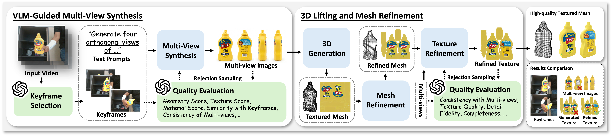
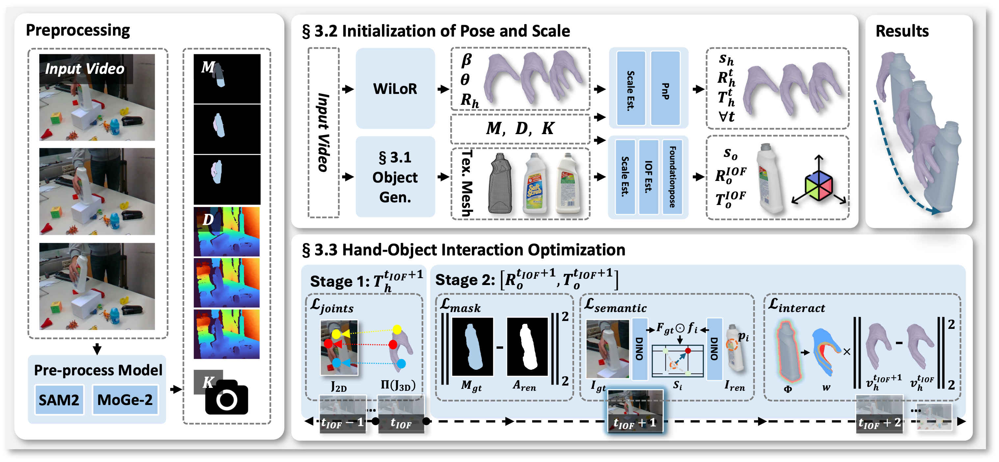

Hand-object Interaction Reconstruction from Video via Agentic Generation
Introducing AGILE, a framework that reconstructs simulation-ready interaction
sequences from monocular video.
Novel Generation Pipeline: We propose the first agentic HOI pipeline that integrates
VLM-guided quality assessment with generative models,
enabling the production of high-fidelity, watertight meshes
independent of video occlusions.
Robust Optimization Strategy: We introduce
a robust anchor-and-track optimization strategy that eliminates the dependency on brittle SfM by anchoring pose
initialization at a single contact frame and propagating it
via semantic and geometric alignment.
Physics-Aware Constraints: We incorporate
physics-aware constraints to strictly enforce interaction stability
and prevent penetration.
TL;DR: Reconstruct simulation-ready hand-object interaction from monocular video via agentic generation and robust pose tracking.
Abstract
Reconstructing dynamic hand-object interactions from monocular videos is critical for dexterous manipulation data collection and creating realistic digital twins for robotics and VR. However, current methods face two prohibitive barriers: (1) reliance on neural rendering often yields fragmented, non-simulation-ready geometries under heavy occlusion, and (2) dependence on brittle Structure-from-Motion (SfM) initialization leads to frequent failures on in-the-wild footage. To overcome these limitations, we introduce AGILE, a robust framework that shifts the paradigm from reconstruction to agentic generation for interaction learning. First, we employ an agentic pipeline where a Vision-Language Model (VLM) guides a generative model to synthesize a complete, watertight object mesh with high-fidelity texture, independent of video occlusions. Second, bypassing fragile SfM entirely, we propose a robust anchor-and-track strategy. We initialize the object pose at a single interaction onset frame using a foundation model and propagate it temporally by leveraging the strong visual similarity between our generated asset and video observations. Finally, a contact-aware optimization integrates semantic, geometric, and interaction stability constraints to enforce physical plausibility. Extensive experiments on HO3D, DexYCB, and in-the-wild videos reveal that AGILE outperforms baselines in global geometric accuracy while demonstrating exceptional robustness on challenging sequences where prior arts frequently collapse. By prioritizing physical validity, our method produces simulation-ready assets validated via real-to-sim retargeting for robotic applications.
Interactive 3D Visualization
TipHow to inspect camera views
Double-click to reset the view. Use the play/pause button (⏸️) to pause the animation and frame controls to navigate. Adjust Opacity to compare video frames with the 3D hand-object reconstruction.
The purple-blue mesh shows the reconstructed hand, and the object mesh updates dynamically with the video.
How AGILE Works?
Given monocular video, AGILE reconstructs 4D hand-object trajectories with simulation-ready assets. Unlike methods relying on neural rendering and fragile SfM, we shift from reconstruction to agentic generation with VLM-guided supervision and robust pose tracking (Figure 2).
Stage 1: Agentic Textured Object Generation
To address severe hand occlusion, we employ an agentic framework where a VLM guides multi-view synthesis and supervises mesh generation via rejection sampling.
VLM-Guided Multi-View Synthesis. A VLM agent selects informative keyframes to synthesize orthogonal object views. A VLM critic filters generated images via rejection sampling to ensure consistency with video observations.
3D Lifting and Mesh Refinement. Validated views are processed to generate an initial mesh, then refined through automated retopology and VLM-supervised texture enhancement, producing simulation-ready assets with high-fidelity appearance.

Figure 1: Agentic Textured Object Generation. A VLM agent selects keyframes and guides multi-view synthesis with rejection sampling. Validated views are lifted to 3D, followed by topology optimization and VLM-supervised texture refinement.
Stage 2: Hand-Object Interaction Optimization
We establish metric initialization using foundation models (MoGe-2 for depth, SAM2 for segmentation). The hand is initialized via WiLoR with scale recovered through ICP. For the object, we identify the interaction onset frame and apply FoundationPose using our generated mesh.
Starting from this frame, we perform bi-directional optimization. For each frame, we refine hand translation via joint reprojection, then optimize object pose using mask alignment, DINO semantic features, and interaction stability constraints that prevent penetration and lock the object to the grasping hand.

Figure 2: Overview of AGILE. (1) Agentic Generation: VLM-guided multi-view synthesis with rejection sampling produces a watertight textured mesh. (2) SfM-Free Initialization: Hand initialized via WiLoR, object pose anchored at Interaction Onset Frame. (3) Contact-Aware Optimization: Bi-directional tracking with semantic and interaction constraints.
Qualitative Results
High-fidelity reconstruction results on diverse objects from HO3D-v3, DexYCB, and in-the-wild sequences.
‹
›
360° rotation visualization of reconstructed objects showing complete geometry and texture quality.
‹
›
Simulation-ready assets validated through real-to-sim retargeting in Isaac Gym.
‹
›
Quantitative Results
We conduct extensive quantitative evaluation on HO3D-v3 and DexYCB datasets,
comparing AGILE against state-of-the-art methods HOLD
and MagicHOI across
multiple metrics including hand pose accuracy (MPJPE), object geometry fidelity (CD, F-scores),
interaction quality (CDh), and success rate (SR).
Note: Baseline metrics (†) are averaged over successful sequences only (survivor bias).
AGILE achieves 100% success rate on both datasets, while HOLD fails on 55% of DexYCB
sequences and MagicHOI fails on 75%.
BibTeX
@article{agile2026,
title={AGILE: Hand-object Interaction Reconstruction from Video via Agentic Generation},
author={Anonymous},
journal={Under Review},
year={2026}
}
Acknowledgement
We thank NYU VisionX and Cupid for the nice project page template.